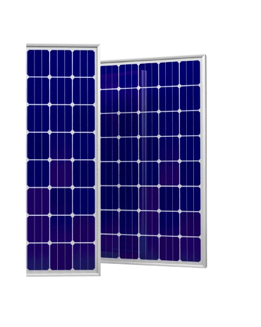
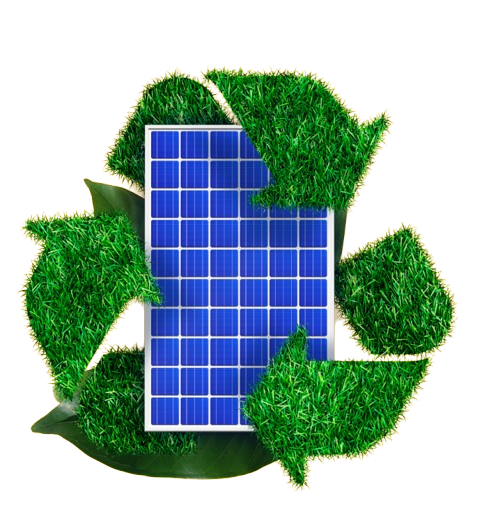

O que são placas solares?
As placas solares, ou módulos fotovoltaicos, são a tecnologia que permite converter a luz solar em energia elétrica por efeito fotovoltaico, que consiste no surgimento de uma corrente elétrica dentro da estrutura de um material semicondutor quando este é exposto à partículas de energia chamadas de radiação eletromagnética (luz).
Como sua fonte de energia é o Sol, a energia fotovoltaica é considerada limpa, sustentável e renovável. Porém, no fim da sua vida útil ela enfrenta alguns desafios, com os materiais utilizados nas células fotovoltaicas sendo, em muitos casos, difíceis de reciclar e descartar sem gerar danos ao meio ambiente.
As placas que oferecemos têm esses desafios diminuídos ao máximo, por serem extremamente sustentáveis. Assim, não causam efeitos negativos no meio ambiente. Além disso, são extremamente econômicas, fazendo você gastar menos dinheiro!
Comprando nossas placas, você está contribuindo para atingir um dos Objetivos de Desenvolvimento Sustentável, sendo um passo importante para ajudar o mundo.